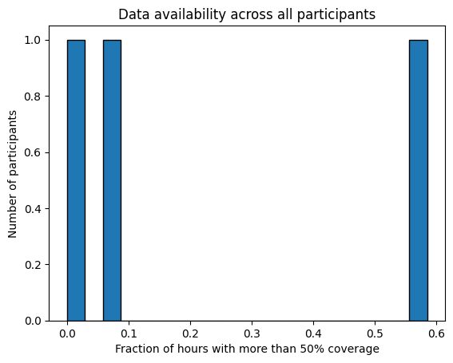

Heart rate specific template#
This is a template for analysing, cleaning, and extracting features for heart rate data collected by a watch. It is recommended to first read the general template to understand the pipeline used here. In addition to the dataset specifications set out in the general template, this data should have a heart rate column that reports a numerical value of heart rate such as beats per minute.
Data analysis#
First, we make all the neccesary imports and get the list of data files:
from IPython.display import display, HTML
import pandas as pd
import matplotlib.pyplot as plt
import calculate_durations
import all_field_summaries
import timestamps_check
import clean_and_extract_features
import helper_funcs
import os
import feature_extraction
import additional_funcs
# Set input variables
Folder_structure=1 # This should be either 1 or 2 (see above)
csv_name='active_apple_healthkit_heart_rate' # The standard name for the csv that contains this data
site_list = ['test'] #The names of the subfolders for each site
input_folder = '//nasr.man.ac.uk/bmhrss$/snapped/replicated/CONNECT_study_data/data/test/passive-data/merged-data/' #The folder that contains all the site subfolders
#Get a list of the paths to each file to be included in this analysis
files_list=helper_funcs.get_file_paths(input_folder, csv_name, Folder_structure,site_list)
3 files found
Summarise_fields#
For heart rate data, this function can be useful for checking that the general distribution of heart rate values reported by the heart rate measurement column are sensible. It may also be useful for checking that the unit column (if there is one) is consistent across all the data.
If the data needs filtering, for example if there are other types of data in the file, adjust the filter_dict dictionary and set the filter_dict variable in summarise_fields to filter_dictionary.
#If you need to filter the data, edit this dictionary and filter_dict to filter_dictionary below
filter_dictionary = {
# If you wish to only keep datapoints with certain values on specific rows, edit this
# dictionary and set filter_dict in the function below to filter_dictionary. The keys
# here are the names of the columns you want to filter by, and the values are the list
# of acceptable entries for that column.
"col1": [1, 3, 5],
"col2": ['A', 'C'],
}
# Call Summarise fields
df=all_field_summaries.Summarise_fields(
files_list=files_list,
time_stamp='value.time', #The name of the column that contains the timestamp.
fields=['value.doubleValue', 'value.unit'], # The heart rate column and the unit column.
filter_dict=None, # No filtering needed
df_adjustment_args=[None], # No adjustments neccesary.
)
# Display the results
df = df.round(2) # rounds the numbers for ease of viewing, may need to be adjusted depending on data.
html_table = df.to_html(index=False)
styled_html = f"<div style='font-size:12px'>{html_table}</div>"
display(HTML(styled_html))
| Field | Total | Values | Mean | Min | P1 | LQT | median | UQT | P99 | Max |
|---|---|---|---|---|---|---|---|---|---|---|
| value.doubleValue | 36396 | too big, 2858 unique values | 86.989773 | 40.0 | 45.0 | 62.0 | 82.0 | 103.0 | 180.0 | 189.0 |
| value.unit | 36384 | {'count/min': 36384} | N/A | N/A | N/A | N/A | N/A | N/A | N/A | N/A |
In the above example, we can see that the heart rate values generaly seem sensible and the unit is consistently counts per minute.
investigate_frequency#
This function can give you an idea of the sampling frequency of the data, and also whether the duration of the datapoints is realistic if a duration/end time column is given.
#If you need to filter the data, edit this dictionary and filter_dict to filter_dictionary below
filter_dictionary = {
# If you wish to only keep datapoints with certain values on specific rows, edit this
# dictionary and set filter_dict in the function below to filter_dictionary. The keys
# here are the names of the columns you want to filter by, and the values are the list
# of acceptable entries for that column.
"col1": [1, 3, 5],
"col2": ['A', 'C'],
}
df = calculate_durations.investigate_frequency(
files_list = files_list,
thresh = 1, # The threshold used when investigating closeness to mode.
timestamp_col = 'value.time', # Name of timestamp column
end_time_col = 'value.endTime', # Name of end time column.
duration_col = None, # There is no duration column
convert_to_unix = None, # Data is already in unix seconds
filter_dict = None, # No filtering needed
df_adjustment_args=[None],# No adjustments neccesary for this data type.
)
html_table = df.to_html(index=False)
styled_html = f"<div style='font-size:14px'>{html_table}</div>"
display(HTML(styled_html))
| Mean | Median | Min | Max | Mode | number that are mode | number under mode (1 sec buffer) | number close to mode (within 1 secs) | |
|---|---|---|---|---|---|---|---|---|
| time gaps | 149.467442 | 9.0 | 1.0 | 692418.0 | 5.0 | 0.135153 | 0.148896 | 0.24018 |
| durations | 0.000000 | 0.0 | 0.0 | 0.0 | 0.0 | 1.000000 | 0.000000 | 1.00000 |
In the above example, you can see that the duration is always zero (i.e the end time column is always the exact same time as the timestamp column). This means that the datapoints are effectively instantaneous and we are not given any meaningful information about the period each datapoint represents. Therefore, we will not use the end time column for the rest of the analysis and feature extraction. If the durations appear to potentially be sensible, then you may wish to verify this with a combination of manual data checking and looking at the EAS errors in the timestamps check below.
The sampling frequency is likely to vary quite a bit for heart rate data, as more measurements are likely to be collected during exercise. You may wish to look into the breakdown of time gap distributions in more detail to see if there appears to be a ‘resting’ sampling frequency. The function time_gap_freqs demonstrated in the code below may be useful for this. To tailor this to your data, adjust the following variables:
time_stamp_col: The name of the timestamp column. This will be the start column if there is also an end time column.
output_path: A file path for where the results will be saved in a csv (see below for details)
filter_dict: optional (default is None), set this as ‘filter_dictionary’ and adjust the dictionary ‘filter_dictionary’ below if you wish to filter one or more fields
#If you need to filter the data, edit this dictionary and filter_dict to filter_dictionary below
filter_dictionary = {
# If you wish to only keep datapoints with certain values on specific rows, edit this
# dictionary and set filter_dict in the function below to filter_dictionary. The keys
# here are the names of the columns you want to filter by, and the values are the list
# of acceptable entries for that column.
"col1": [1, 3, 5],
"col2": ['A', 'C'],
}
# Get a df listing the 15 most common time gaps between datapoints
first_15_rows = additional_funcs.time_gap_freqs(
all_file_paths = files_list,
output_path = '//nasr.man.ac.uk/bmhrss$/snapped/replicated/CONNECT_study_data/2. Data exploration/Data_analysis_book_output_files/test',
time_stamp = 'value.time', # Name of the timestamp column
filter_dict = None # This data does not need filtering
)
# Show results
html_table = first_15_rows.to_html(index=False)
styled_html = f"<div style='font-size:14px'>{html_table}</div>"
display(HTML(styled_html))
| gap | count | fraction |
|---|---|---|
| 5.0 | 4917 | 0.135142 |
| 9.0 | 2276 | 0.062555 |
| 4.0 | 2175 | 0.059779 |
| 3.0 | 1990 | 0.054694 |
| 2.0 | 1715 | 0.047136 |
| 1.0 | 1712 | 0.047054 |
| 6.0 | 1646 | 0.045240 |
| 7.0 | 1370 | 0.037654 |
| 8.0 | 1289 | 0.035428 |
| 62.0 | 81 | 0.002226 |
| 30.0 | 78 | 0.002144 |
| 35.0 | 73 | 0.002006 |
| 66.0 | 70 | 0.001924 |
| 270.0 | 70 | 0.001924 |
| 64.0 | 69 | 0.001896 |
There are more results in a csv file saved to the specified output folder, the above results just show the 15 most common time gaps. In this example, the results suggest that the resting frequency is intended to be around 5 minutes as there is a bimodal distribution with a cluster below 10 seconds and a cluster around 300 seconds. Having an approximation of the resting sampling frequency is useful for the later feature extraction section.
check_timestamp_errors#
Next, we check the presence of timestamp related errors in the data, see the general template for definitions.
The measurement_cols variable should be the heart rate column.
#If you need to filter the data, edit this dictionary and filter_dict to filter_dictionary below
filter_dictionary = {
# If you wish to only keep datapoints with certain values on specific rows, edit this
# dictionary and set filter_dict in the function below to filter_dictionary. The keys
# here are the names of the columns you want to filter by, and the values are the list
# of acceptable entries for that column.
"col1": [1, 3, 5],
"col2": ['A', 'C'],
}
# Call get_timestamps_errors
df=timestamps_check.check_timestamp_errors(
files_list=files_list,
EAS_threshold=None, # set to None as we do not have a end time or duration column
timegap_threshold=1, # The threshold below which a time gap will be counted as a STG
measurement_cols=['value.doubleValue'], # a list of all measurement columns to be included.
timestamp_col='value.time', # Name of timestamp column
end_time_col=None, # The end time column does not give useful values, so we leave this as None
duration_col= None, # Name of duration column.
convert_to_unix = None, # The data is already in unix time
filter_dict=None, # No filtering neccesary
df_adjustment_args=[None],# No adjustments neccesary for this data type.
output_folder='//nasr.man.ac.uk/bmhrss$/snapped/replicated/CONNECT_study_data/2. Data exploration/Data_analysis_book_output_files/active_apple_healthkit_sleep_stages', # A folder where outputs are stored
site_col='key.projectId', # The site column
participant_ID_col='key.userId'# The participant column
)
# Show results
html_table = df.to_html(index=False)
styled_html = f"<div style='font-size:14px'>{html_table}</div>"
display(HTML(styled_html))
| total counts | fraction RT-CM | fraction RT+CM | fraction STG-CM | fraction STG+CM | fraction EAS | fraction EAS (over thresh) | |
|---|---|---|---|---|---|---|---|
| All data | 36384.0 | 0.0 | 0.000330 | 0.0 | 0.0 | 0.0 | 0.0 |
| Maximum | 29570.0 | 0.0 | 0.000338 | 0.0 | 0.0 | 0.0 | 0.0 |
In this example there is a very low rate of timestamp errors. If the error rate is higher, the files in the output folder can be useful for investigating these errors further and finding potential explanations.
Cleaning and feature extraction#
Conclusion#
Here you can give a short summary of the above data analysis and any decisions made.
Feature extraction and cleaning#
The below code cleans the data, extracts metadata features, and then extracts average heart rate.
For the initial cleaning of the data, the standard clean_and_extract_features function is used. In this example, we choose to use ‘mean’ as the meas_agg variable and leave STG_fix=False. An end time or duration column should only be given if the above analysis suggested it was relevant. Choice of STG value can be subjective, and should also be guided by the results of the data analysis.
We then use the get_extra_HR_metadata_features function to add number of datapoints filtered (using 30-250 as the acceptable range) and coverage to the metadata features. The coverage is the amount of time in the interval that is within a specified amount of time from a datapoint, given by the variable ‘max_time_gap’, this gives an idea of how much data is missing, which can be useful for heart rate data as the sampling frequency tends to be variable so raw count is less informative. The max_time_gap variable might be difficult to determine exactly, but can be informed by the analysis into time gap frequencies above. In this example the resting sampling frequency seemed to be about 5 minutes, so we will use 300 seconds for this variable. The following variables need to be set in the get_extra_HR_metadata function:
timestamp_col: the name of the timestamp/ start time column
meas_col: the heart rate column
max_time_gap: The maximum amount of time you expect there to be between datapoints if there is no missing data.
interval: The time interval for the output features, takes ‘D’, ‘h’, or ‘min’
end_time_col: optional (default is None), set as the name of the end time column if one exists and the data analysis earlier suggested the values are legitimate.
duration_col: optional (default is None), set as the name of the duration column if one exists and the data analysis earlier suggested the values are legitimate.
low_thresh: optional (default 30) the lowest acceptable value for the measurement column, any datapoints lower than this will be capped to this threshold in the cleaned data files.
upper_thresh: optional (default 250) the highest acceptable value for the measurement column, any datapoints higher than this will be capped to this threshold in the cleaned data files.
included_errors: optional, default is [‘RT+CM’,’STG+CM’,’STG-CM’,’EAS’]. This should be the same as what was just used in get_timestamp_errors_and_clean. This variable is needed again for this function as the total errors will be recalculated based on this list plus the number filtered.
It is important to note that this current cleaning procedure deals only with timestamp errors and extreme values, depending on the source of your data you may wish to also insert another cleaning function into the code below to clean cleaned_df further before extracting features.
After cleaning the data, we use the weighted_average function to get average heart per interval (in this example hourly) for both filtered and unfiltered data. We do not just do simple averaging here because more datapoints are collected when the heart rate is higher, so a simple average would give an overestimation of the heart rate. The weighted_average function weights each datapoint by the time period it represents. If there is no duration or end time given, the start time is calculated to be halfway between the current datapoint and the previous datapoint, and the end time is calculated as half way between the current datapoint and the next datapoint. In order to not over-represent datapoints that are next to a period of missing data, we cap the time period a data point can represent to the expected maximum time gap, which is given as an input variable max_time_gap (this should be the same value as the max_time_gap variable used above). The following input variables need to be adjusted for this function:
timestamp_col: the name of the timestamp/ start time column
meas_col: the name of the measurement column (so heart rate column for this template)
max_time_gap: The maximum amount of time you expect there to be between datapoints if there is no missing data.
interval: The time interval for the output features, takes ‘D’, ‘h’, or ‘min’
col_name: The name of the column in the output features, e.g ‘average heart rate’
end_time_col: optional (default is None), set as the name of the end time column if one exists and the data analysis earlier suggested the values are legitimate.
duration_col: optional (default is None), set as the name of the duration column if one exists and the data analysis earlier suggested the values are legitimate.
#TODO Add options for a range of input and output file structures and csv compressions
#TODO fix warning from sleep duration extraction function
output_folder = '//nasr.man.ac.uk/bmhrss$/snapped/replicated/CONNECT_study_data/analysis/model-development/1. Derived features/'
data_type='active_apple_healthkit_heart_rate'
interval='h' # We want to extract hourly features here.
filter_dict = {
'col A': [1,2,4]
}
for file_path in files_list:
# Get ready to save output folder
participant, site=helper_funcs.get_participant_and_site(file_path)
os.makedirs(output_folder+site, exist_ok=True)
os.makedirs(output_folder+site+'/'+participant, exist_ok=True)
#Read in the csv as a df
try:
if file_path[-3:]=='csv':
df=pd.read_csv(file_path)
if file_path[-3:]=='.gz':
df=pd.read_csv(file_path, compression='gzip')
except:
print(file_path +' file cannot be read')
continue
# Get cleaned version of the raw data and extract metadata features
cleaned_df, features = clean_and_extract_features.get_timestamp_errors_and_clean(
df=df,
interval=interval,
time_stamp_col='value.time', # The timestamp column
measurement_col='value.doubleValue', # The measurement column
STG=1, # The STG value
EAS_thresh=None, # Leave as default as we do not have a endtime or duration
STG_fix=False, # We have chosen not to merge STGs in the clean data
meas_agg='mean', # RT+CM errors will be merged by averaging
end_time_col=None, # The end time column does not give useful values, so we leave this as None.
duration_col=None, # There is no duration column
filter_dict=None, # We do not need to filter the data
convert_to_unix=None, # The data is already in unix seconds
included_errors=['RT+CM','STG+CM','STG-CM'] # The errors we want to include in total errors
)
# Add number filtered and coverage metadata features to features
features, cleaned_df=feature_extraction.get_extra_HR_metadata_features (
cleaned_df,
timestamp_col='value.time', # the timestamp column
meas_col='value.doubleValue', # the heart rate column
max_gap=300, # The max time we would expect between datapoints
interval=interval,
low_thresh=30, # The lowest acceptable value for the heart rate
upper_thresh=250, # The highest acceptable value for the heart rate
end_time_col=None, # The end time column does not give useful values, so we leave this as None
duration_col=None ,# There is no duration column
included_errors=['RT+CM','STG+CM','STG-CM','EAS'] # The errors we want to include in total errors
)
#Extract average heart rate features
weighted_average_unfiltered = feature_extraction.weighted_average(
df=cleaned_df.copy(),
timestamp_col='value.time', # The timestamp column
meas_col='value.doubleValue', # The heart rate column
max_time_gap=300, # The max time we would expect between datapoints
interval=interval,
col_name = 'average HR (unfiltered)', # The column name to be used in the output features
end_time_col=None, # The end time column does not give useful values, so we leave this as None
duration_col=None # There is no duration column
)
weighted_average_filtered = feature_extraction.weighted_average(
df=cleaned_df.copy(),
timestamp_col='value.time', # The timestamp column
meas_col='filtered', # This is the name given to the filtered heart rate column above
max_time_gap=300, # The max time we would expect between datapoints
interval=interval,
col_name = 'average HR (unfiltered)', # The column name to be used in the output features
end_time_col=None, # The end time column does not give useful values, so we leave this as None
duration_col=None # There is no duration column
)
HR_features = pd.concat([weighted_average_filtered, weighted_average_unfiltered], axis=1)
# Save all outputs
cleaned_df.to_csv(output_folder+'/'+site+'/'+participant+'/'+data_type+'_cleaned.csv')
features.to_csv(output_folder+'/'+site+'/'+participant+'/'+data_type+'_'+interval+'_metadata.csv')
HR_features.to_csv(output_folder+'/'+site+'/'+participant+'/'+data_type+'_'+interval+'_features.csv')
Data availability#
We can now use the metadata features we created to analyse how much data is available. We use the below code to look at the how many intervals (in this case hours) have more than 50% coverage across all participants
input_folder='//nasr.man.ac.uk/bmhrss$/snapped/replicated/CONNECT_study_data/analysis/model-development/1. Derived features/'
csv_name='active_apple_healthkit_heart_rate_h_metadata'
files_list = helper_funcs.get_file_paths(input_folder, csv_name, Folder_structure=2, site_list=site_list)
filter_field='Coverage (secs) from clean datapoints' # This can be changed if you want coverage from all datapoints
all_participants=[]
for path in files_list:
df=pd.read_csv(path)
all_participants.append(1-(len(df[df[filter_field]>1800])/len(df[filter_field])))
plt.hist(all_participants, bins=20, edgecolor='black')
# Add labels and title
plt.xlabel('Fraction of hours with more than 50% coverage')
plt.ylabel('Number of participants')
#plt.xticks(range(0.0, 1.0, 0.1))
plt.title('Data availability across all participants')
3 files found
Text(0.5, 1.0, 'Data availability across all participants')
